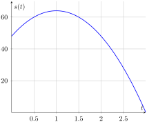
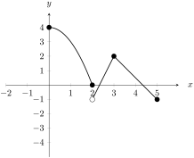

Section3.2A2: Derivatives and Qualitative Behavior of Graphs
Objectives
A2
I can define absolute extrema, local extrema, critical points, inflection points, and use them to determine the qualitative behavior of a function (increasing/decreasing, concavity, classification of local extrema, classification of absolute extrema on a closed interval).
We say that \(f(x)\) has a global maximum at \(x=c\) provided that \(f(c)\geq f(x)\) for all \(x\) in the domain of the function. We also say that \(f(c)\) is a global maximum value for the function.
On the other hand, we say that \(f(x)\) has a global minimum at \(x=c\) provided that \(f(c)\leq f(x)\) for all \(x\) in the domain of the function. We also say that \(f(c)\) is a global minimum value for the function.
The global maxima and minima are also known as the global extrema (or extreme values or absolute extrema) of the function. A single maximum or minimum is also referred to as an extremum.
You may also see the terms absolute maximum or absolute minimum used instead of global maximum or global minimum.
Activity3.2.1.
Use Definition 3.2.1 to determine which of the following statements best describes the global extrema of the function shown below.

Figure3.2.2.A function describing the height of an object.
The global maximum is \(t = 1\text{,}\) because this is where the function goes from increasing to decreasing.
The global maximum is \(s(1) = 64\text{,}\) because \(s(t)\leq 64\) for every other input \(t\text{.}\)
The graph has two global minima at the endpoints because the endpoints must be global extrema.
The graph has no global minimum.
Observation3.2.3.
There can be some issues when trying to determine the global mimimum and maximum values of a function only using its graph. The Extreme Value Theorem will guarantee the existence of global extrema on a closed interval. Then we will see how to use derivatives to find algebraically the extrema of a function.
Theorem3.2.4.Extreme Value Theorem.
If \(f\) is continuous on a closed interval \([a,b]\text{,}\) then \(f\) has both a global maximum and a global minimum on the interval.
Activity3.2.2.
Use the image below to answer the following questions.

Figure3.2.5.A function \(y = f(x)\) defined on the interval \([0,5]\)
(a)
True or false: The Extreme Value Theorem guarantees that we have a global maximum and a global minimum.
True
False
(b)
What is the \(x\) value of the global maximum?
0
2
3
5
(c)
What is the \(x\) value of the global minimum?
0
2
3
5
Definition3.2.6.Critical Input/Value/Point.
We say that \(x=c\) is a critical input (or critical number) of \(f(x)\) if \(x=c\) is in the domain of \(f(x)\) and either \(f'(c) = 0\) or \(f'(c)\) does not exist.
The output \(f(c)\) is called the critical value and the pair \((c,f(c))\) is the critical point.
Activity3.2.3.
Which of the following are critical numbers for \(f(x) = \dfrac{1}{3}x^3 - 2x + 2\text{?}\)
\(x = \sqrt{2}\) and \(x = -\sqrt{2}\)
\(\displaystyle x = \sqrt{2}\)
\(x = 2\) and \(x = 0\)
\(\displaystyle x = 2\)
Remark3.2.7.The Closed Interval Method.
The following is a way of finding the global extrema of a continuous function \(f\) on a closed interval \([a,b]\text{.}\)
Make a list of all critical points of \(f\) in \((a,b)\text{.}\) (Do not include any critical points outside of the interval).
Add the endpoints \(a\) and \(b\) to the list.
Evaluate \(f\) at all points on your list.
The smallest output occurs at the global minimum. The largest output occurs at the global maximum.
Activity3.2.4.
Identify the global extrema for the functions below.
(a)
\(f(x) = 3x^4-4x^3\) on \([-1,2]\)
Global maximum is when \(x = 0\) and global minimum when \(x = 1\text{.}\)
Global maximum is when \(x = 2\) and global minimum when \(x = -1\text{.}\)
Global maximum is when \(x = 2\) and global minimum when \(x = 1\text{.}\)
Global maximum is when \(x = 0\) and global minimum when \(x = -1\text{.}\)
(b)
\(f(x) = x\sqrt{4-x}\) on \([-2,4]\text{.}\)
Global maximum is when \(x = -2\) and global minimum when \(x = \dfrac{8}{3}\text{.}\)
Global maximum is when \(x = 4\) and global minimum when \(x = \dfrac{8}{3}\text{.}\)
Global maximum is when \(x = \dfrac{8}{3}\) and global minimum when \(x = -2\text{.}\)
Global maximum is when \(x = 4\) and global minimum when \(x = -2\text{.}\)
Definition3.2.8.Local Maximum/Minimum.
We say that \(f(x)\) has a local maximum at \(x=c\) provided that \(f(c)\geq f(x)\) for all \(x\) near \(c\text{.}\) We also say that \(f(c)\) is a local maximum value for the function. On the other hand, we say that \(f(x)\) has a local minimum at \(x=c\) provided that \(f(c)\leq f(x)\) for all \(x\) near \(c\text{.}\) We also say that \(f(c)\) is a local minimum value for the function. The local maxima and minima are also known as the local extrema (or relative extrema) of the function.
Observation3.2.9.
To find the extreme values of a function we can consider all its local extrema (local maxima and minima) and study them to find which one(s) give the largest and smallest values on the function. But how do you find the local/relative extrema? We will see that we can detect local extrema by computing the first derivative and finding the critical points of the function. By finding the critical points, we will produce a list of candidates for the extrema of the function.
Activity3.2.5.
We have encountered several terms recently, so we should make sure that we understand how they are related. Which of the following statements are true?
In a closed interval an endpoint is always a local extrema but it might or might not be a global extremum.
In a closed interval an endpoint is always a global extremum.
A critical point is always a local extremum but it might or might not be a global extremum.
A local extremum only occurs where the first derivative is equal to zero.
A local extremum always occurs at a critical point.
A local extremum might occur at a critical point or at an endpoint of a closed interval.
Definition3.2.10.Increasing/Decreasing.
Let \(f(x)\) be a differentiable function on the interval \((a,b)\text{.}\)\(f(x)\) is increasing on the interval \((a,b)\) if \(f'(x) \gt 0\text{,}\) and decreasing on \((a,b)\) if \(f'(x) \lt 0\text{.}\)
Activity3.2.6.
This activity will develop the intuition for the First Derivative Test, a method of classifying local extrema. The questions below refer to this prompt:
Sketch the graph of a continuous function \(f(x)\) which has the following properties:
\(f\) is neither increasing nor decreasing at \(x = 0\)
\(f\) has a local minimum at \(x = 2\)
(a)
Which is the most accurate description for how the graph behaves around \(x=-2\text{?}\)
\(f'(x) \lt 0\) before \(x=-2\) and \(f'(x) \gt 0\) after \(x=-2\)
\(f'(x) \lt 0\) before \(x=-2\text{,}\)\(f'(x) = 0\) at \(x = -2\text{,}\) and \(f'(x) \gt 0\) after \(x=-2\)
\(f'(x) \gt 0\) before \(x=-2\) and \(f'(x) \lt 0\) after \(x=-2\)
\(f'(x) \gt 0\) before \(x=-2\text{,}\)\(f'(x) = 0\) at \(x = -2\text{,}\) and \(f'(x) \lt 0\) after \(x=-2\)
(b)
Which is the most accurate description for how the graph behaves around \(x = 0\text{?}\)
\(f'(x) \lt 0\) before \(x=0\) and \(f'(x) \lt 0\) after \(x=0\)
\(f'(x) \lt 0\) before \(x=0\text{,}\)\(f'(0) = 0\text{,}\) and \(f'(x) \lt 0\) after \(x=0\)
\(f'(x) \gt 0\) before \(x=0\) and \(f'(x) \gt 0\) after \(x=0\)
\(f'(x) \gt 0\) before \(x=0\text{,}\)\(f'(0) = 0\text{,}\) and \(f'(x) \gt 0\) after \(x=0\)
(c)
Which is the most accurate description for how the graph behaves around \(x=2\text{?}\)
\(f'(x) \lt 0\) before \(x=2\text{,}\)\(f'(x) = 0\) at \(x = 2\text{,}\) and \(f'(x) \gt 0\) after \(x=2\)
\(f'(x) \lt 0\) before \(x=2\) and \(f'(x) \gt 0\) after \(x=2\)
\(f'(x) \gt 0\) before \(x=2\) and \(f'(x) \lt 0\) after \(x=2\)
\(f'(x) \gt 0\) before \(x=2\text{,}\)\(f'(x) = 0\) at \(x = 2\text{,}\) and \(f'(x) \lt 0\) after \(x=2\)
Theorem3.2.11.First Derivative Test.
Suppose that \((c,f(c))\) is a critical point of \(f(x)\) and that \(f(x)\) is continuous at \(x=c\text{.}\)
If \(f'(x)\) switches from negative to positive around \(c\text{,}\) then \(f(x)\) has a local minimum at \(x=c\text{.}\)
If \(f'(x)\) switches from positive to negative around \(c\text{,}\) then \(f(x)\) has a local maximum at \(x=c\)
If \(f'(x)\) does not switch sign around \(c\text{,}\) then \(f(x)\) has neither a local maximum nor a local minimum at \(x=c\text{;}\) the most we can say is that it has a horizontal tangent line.
Activity3.2.7.
This activity will walk you through how to use Theorem 3.2.11 to classify local extrema.
Let \(f(x) = x^4-4x^3+4x^2\text{.}\)
(a)
The first thing to do is to find the critical inputs for \(f(x)\text{,}\) then organize them on a number line. Which number line is most accurate for this function?
Figure3.2.12.A possible number line for \(f(x)\text{,}\) with critical inputs \(x=0,-1,2\)
Figure3.2.13.A possible number line for \(f(x)\text{,}\) with critical inputs \(x=0,1,-2\)
Figure3.2.14.A possible number line for \(f(x)\text{,}\) with critical inputs \(x=1,2\)
Figure3.2.15.A possible number line for \(f(x)\text{,}\) with critical inputs \(x=0,1,2\)
Figure3.2.16.A possible number line for \(f(x)\text{,}\) with critical inputs \(x=0,-1,-2\)
Figure3.2.17.A possible number line for \(f(x)\text{,}\) with critical inputs \(x=-1,-2\)
(b)
Identify the intervals which your critical inputs have split \((-infty,\infty)\) into. There should be 4 total if you chose A, B, D, or E; there should be 3 if you chose C or F.
(c)
Choose an \(x-\)value which lies in each of the intervals you chose. For each interval, determine: is \(f'(x)\) positive or negative at the test point? Record your answers with the number line in some fashion.
(d)
On which interval(s) is \(f(x)\) increasing? What about the interval(s) where \(f(x)\) is decreasing? Record your answers with the number line in some fashion.
(e)
Use part (d) to classify all critical points of \(f(x)\) as local maxima, local minima, or neither.
(f)
Sketch a rough graph of \(f(x)\) based on the information you’ve collected to this point.
Theorem3.2.18.Second Derivative Test.
Suppose that \(x=c\) is a critical input for \(f(x)\) and that \(f''(x)\) is continuous at \(x=c\text{.}\) Then,
If \(f''(c) \lt 0\text{,}\) then \(f(x)\) has a local maximum at \(x=c\text{.}\)
If \(f''(c) \gt 0\text{,}\) then \(f(x)\) has a local minimum at \(x=c\text{.}\)
If \(f''(c) = 0\text{,}\) the Second Derivative Test is inconclusive.
Activity3.2.8.
Consider \(f(x) = -x^3+3x+4\)
(a)
Perform the first derivative test on the derivative, \(f'(x) = -3x^2+3\text{.}\) This includes drawing/dividing the number line.
(b)
Which statement is most correct?
\(f(x)\) has a maximum at \(x= -1\) and a minimum at \(x= 1\)
\(f(x)\) has a maximum at \(x= 1\) and a minimum at \(x= -1\)
\(f(x)\) has a maximum at \(x= 1\) and a maximum at \(x= -1\)
\(f(x)\) has a minimum at \(x= -1\) and a minimum at \(x= 1\)
Activity3.2.9.
For each of the following functions, find the intervals on which \(f(x)\) is increasing or decreasing. Then identify any local extrema using either the First or Second Derivative Test.
(a)
\(f(x)=x^3+3x^2+3x+1\)
(b)
\(f(x)=\dfrac{1}{2}x+\cos x\) on \((0,2\pi)\)
(c)
\(f(x)=(x^2-9)^{2/3}\)
(d)
\(f(x)= \ln(2x-1)\)
(e)
\(f(x)=\dfrac{x^2}{x^2-4}\)
Definition3.2.19.Concavity.
A function \(f(x)\) is said to be concave up if it bends upward away from its tangent lines; if it bends downward away from its tangent lines, we say \(f(x)\) is concave down.
The quality of being concave up/concave down is called the concavity of the function.
Activity3.2.10.
Let \(f(x) = x^2\) and \(g(x) = -x^2+5\)
(a)
Sketch the graph \(f'(x)\) and \(g'(x)\text{.}\)
(b)
Which is true about \(f(x)\) and \(g(x)\) when compared against their derivative graphs?
\(f(x)\) is concave up and \(f'(x)\) has a negative slope; \(g(x)\) is concave down and \(g'(x)\) has a positive slope
\(f(x)\) is concave up and \(f'(x)\) has a positive slope; \(g(x)\) is concave down and \(g'(x)\) has a negative slope
\(f(x)\) is concave down and \(f'(x)\) has a negative slope; \(g(x)\) is concave up and \(g'(x)\) has a positive slope
\(f(x)\) is concave down and \(f'(x)\) has a positive slope; \(g(x)\) is concave up and \(g'(x)\) has a negative slope
(c)
What connection do you think exists between concavity and the second derivative of a function? Write a sentence connecting the two ideas.
Theorem3.2.20.Concavity Test.
Suppose that \(f(x)\) is twice-differentiable on some interval \((a,b)\text{.}\) If \(f''(x) \gt 0\) on \((a,b)\text{,}\) then \(f\) is concave up on \((a,b)\text{.}\) If \(f''(x) \lt 0\) on \((a,b)\text{,}\) then \(f\) is concave down on \((a,b)\text{.}\)
Definition3.2.21.Inflection Point.
Let \(f(x)\) be continuous around \(x=c\text{.}\)\(f(x)\) has an inflection point at \((c,f(c))\) if \(f''(c) = 0\) and \(f''(x)\) changes sign around \(x=c\)
An inflection point occurs when a function is differentiable and changes concavity.
Activity3.2.11.
Let \(f(x) = x^4-54x^2\text{.}\)
(a)
Perform the first derivative test on \(f(x)\) to classify its local extrema
(b)
On which intervals is \(f(x)\) increasing? What about decreasing?
(c)
Conduct the Concavity Test on \(f(x)\) to determine the intervals on which \(f(x)\) is concave up and concave down.
(d)
Does \(f(x)\) have any inflection points? Where and why?
Activity3.2.12.
For each function: 1) identify the intervals where it is increasing/decreasing; 2) classify any extrema for the function; 3) identify the intervals where it is concave up/concave down; 4) identify the inflection points, if any; 5) use the information to give a rough sketch of the graph.